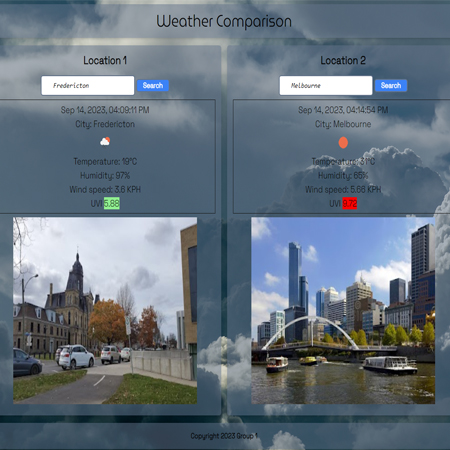

- Project 01:
- Weather Comparison is a web application that allows any user to find the current weather of two cities in the world and compare it, in addition to that, the user will be able to see a representative picture of each city.
- User Story:
- AS AN user of the Weather Comparison application;
- I WANT to compare the weather of any two cities in world, and see a representative picture of each city;
- SO THAT I can be able to know the climatic differences of the two cities and have a clear idea about the each city;

Weather Comparison link: https://azukicoconut.github.io/ProjectBagEnd
Technologies Used: - JQuery - Tailwinds - Openweather API - Google API - ProxiesUsage Instructions: 1. Open Weather Comparison application on your local device. 2. Write down the name of a city in the first container's input field. 3. Click on the search button. 4. Write down the name of a second city in the second container's input field. 5. Compare the data and enjoy the photo.